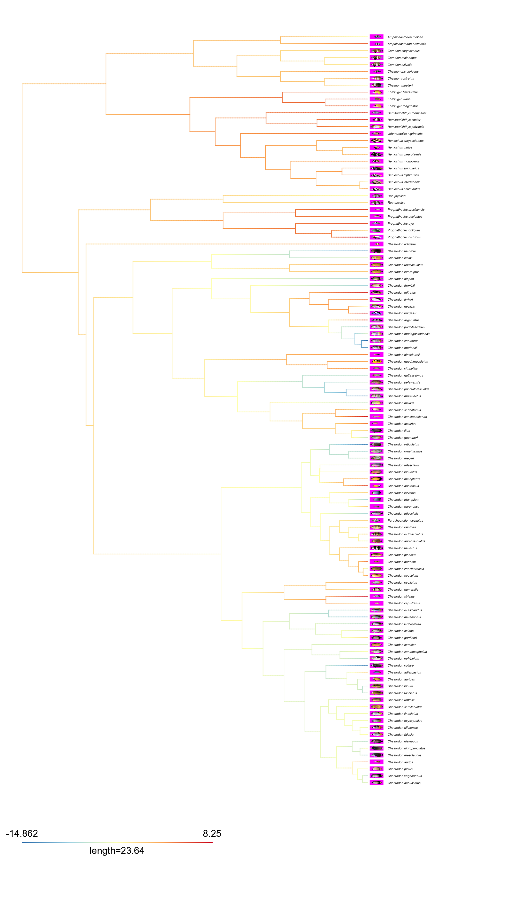
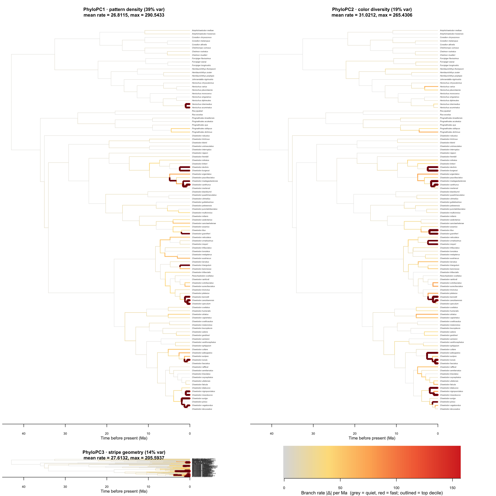

Ancestral state reconstruction of the leading phylogenetic PC axes
Tip
Elective recipe. Takes the cached phyl.pca object from the bundle and maps PC 1, 2, and 3 onto the chronogram with phytools::contMap. The three PCs together capture ~72% of the variance in the pavo color-pattern metrics for Chaetodontidae, so this is a compact view of how the family’s color-pattern axes have evolved through time.
Poster outputs. Each PC has a hero PDF (figures/asr-PC1-hero.pdf, figures/asr-PC2-hero.pdf, figures/asr-PC3-hero.pdf) with tip images + species names. The loadings + variance table is also exported as figures/pca-summary-table.pdf for direct poster insertion.
What you’re computing
Take the bundle’s pavo metric matrix (one row per species, columns are transition density, color/luminance diversity, boundary strength, etc.).
Compute a phylogenetic PCA with phytools::phyl.pca using a Brownian model on the correlation matrix. (This is what the cached phylo_pca.rds contains.)
For each of PC1, PC2, PC3, run phytools::contMap to estimate ancestral values along every branch using Brownian-motion REML.
Plot one figure per PC at poster size so the per-tip detail (image + species name) is legible, and export each as a hero PDF.
# === Canonical recipe call — RUN ONCE, then comment out ===# Fast (~10 sec for 109 species × 10 traits) but we still cache so the# contMap step downstream sees stable PC orientation.pavo <-read.csv(file.path(BUNDLE, "pavo_metrics.csv"))tree <-read.tree(file.path(BUNDLE, "chaetodontidae-tree.tre"))stat_cols <-c("m", "m_r", "m_c", "A", "Sc", "St","Jc", "Jt", "m_dS", "m_dL")pavo$species <-gsub(" ", "_", pavo$species)pavo <- pavo[complete.cases(pavo[, stat_cols]), ]shared <-intersect(pavo$species, tree$tip.label)pavo <- pavo[match(shared, pavo$species), ]tree <-keep.tip(tree, shared)X <-as.matrix(pavo[, stat_cols])rownames(X) <- pavo$speciesset.seed(20260526)ppca <-phyl.pca(tree, X, method ="BM", mode ="corr")saveRDS(list(ppca = ppca, X = X, tree = tree, stat_cols = stat_cols),file.path(BUNDLE, "phylo_pca.rds"))
pp <-readRDS(file.path(BUNDLE, "phylo_pca.rds"))ppca <- pp$ppcatree <- pp$treeS <- ppca$S # n species × n PCs scoreseig <-diag(ppca$Eval)ve <-100* eig /sum(eig)cat(sprintf("Tree tips: %d; traits: %d; PCs: %d\n",length(tree$tip.label), length(pp$stat_cols), length(eig)))
Tree tips: 109; traits: 10; PCs: 10
Loadings + variance explained
A compact summary suitable for the poster. Loadings are color-coded by sign and magnitude; the strongest contributors to each PC are bolded in the narrative below the table.
Phylogenetic PCA: trait loadings on PC1–PC3 and proportion of pavo color-pattern variance captured.
Trait
Description
PC1
PC2
PC3
m
Transition density (mean)
-0.460
+0.198
+0.086
m_r
Transition density, rows
-0.448
+0.098
-0.037
m_c
Transition density, columns
-0.433
+0.288
+0.210
A
Aspect ratio (horizontal vs. vertical patterning)
+0.031
-0.243
-0.487
Sc
Color complexity (Simpson)
-0.363
-0.279
-0.394
St
Transition complexity (Simpson)
-0.295
-0.301
-0.339
Jc
Color diversity (Jaccard)
-0.158
+0.441
-0.437
Jt
Transition diversity (Jaccard)
+0.184
+0.547
-0.168
m_dS
Mean chromatic boundary strength
+0.216
-0.200
-0.136
m_dL
Mean luminance boundary strength
+0.274
+0.327
-0.450
var_row
**Variance explained**
**39.5%**
**19.2%**
**13.5%**
Loading interpretation (signs taken at face value — flip if needed for narrative):
PC1 is dominated by transition-density terms (m, m_r, m_c) with negative loadings, so high PC1 = simple patterns (few color transitions) and low PC1 = busy patterns.
PC2 is dominated by Jc, Jt, m_dL with positive loadings, so high PC2 = high color/luminance diversity.
PC3 is dominated by A (stripe orientation) and m_dL with negative loadings, so high PC3 = horizontal-stripe geometry.
PC1 <-setNames(S[, 1], rownames(S))PC2 <-setNames(S[, 2], rownames(S))PC3 <-setNames(S[, 3], rownames(S))cm1 <-contMap(tree, PC1, plot =FALSE, res =200)cm2 <-contMap(tree, PC2, plot =FALSE, res =200)cm3 <-contMap(tree, PC3, plot =FALSE, res =200)# Set a consistent diverging palette across the three PCs.recolor <-function(cm) {setMap(cm, colors =c("#2c7bb6", "#abd9e9", "#ffffbf","#fdae61", "#d7191c"))}cm1 <-recolor(cm1); cm2 <-recolor(cm2); cm3 <-recolor(cm3)
Plot helper — tree + image tips + species names
The helper plots a contMap, suppresses the default tip labels, and instead places (a) the exemplar image at each tip and (b) a small italic species name underneath the image. It writes both a PNG (for HTML preview) and a hero PDF (for poster insertion).
Code
plot_pc_with_tips <-function(cm, ttl, hero_pdf,img_pad =0.04, lbl_pad =0.012,img_height_frac =0.7,w =12, h =18) { tip_labels <- cm$tree$tip.label n_tips <-length(tip_labels) total_h <-max(nodeHeights(cm$tree)) draw_one <-function(scale_for_pdf =TRUE) {par(mar =c(2.6, 0.4, 2.6, 7.5), bg ="white")plot(cm,fsize =0, # suppress default tip labelsftype ="off",lwd =1.2,outline =FALSE,legend = total_h *0.55,leg.txt ="",xlim =c(0, total_h *1.35))title(ttl, line =1.0, cex.main =1.2)# Tip y-coords from phytools last-plot info lpp <-get("last_plot.phylo", envir = .PlotPhyloEnv) tip_x <- lpp$xx[seq_len(n_tips)] tip_y <- lpp$yy[seq_len(n_tips)]# Image extent: width set by total_h * img_pad; height set by# img_height_frac of the vertical spacing between adjacent tips. dy <-if (n_tips >1) (max(tip_y) -min(tip_y)) / (n_tips -1) else1 img_h <- dy * img_height_frac img_w <- total_h * img_padfor (i inseq_len(n_tips)) { sp <- tip_labels[i] png_path <-file.path(IMG_DIR, paste0(sp, ".png")) x0 <- tip_x[i] + total_h *0.005 y_c <- tip_y[i]if (file.exists(png_path)) { img <-readPNG(png_path)rasterImage(img,xleft = x0,xright = x0 + img_w,ybottom = y_c - img_h /2,ytop = y_c + img_h /2) }text(x0 + img_w + total_h * lbl_pad, y_c,gsub("_", " ", sp),adj =c(0, 0.5),cex =if (scale_for_pdf) 0.50else0.34,font =3, col ="grey15") } }# Hero PDFpdf(hero_pdf, width = w, height = h)draw_one(scale_for_pdf =TRUE)dev.off()# In-document version (will be captured by the chunk fig settings)draw_one(scale_for_pdf =FALSE)invisible(NULL)}
PC1 — pattern density
plot_pc_with_tips(cm1,ttl =sprintf("PhyloPC1 · pattern density (%.0f%% var)", ve[1]),hero_pdf =file.path(FIGDIR, "asr-PC1-hero.pdf"))

Ancestral state reconstruction for PhyloPC1 (pattern density, 40% variance). Hot colors = simple/uniform pattern; cool colors = busy/high-transition pattern. Tip = species exemplar image with name below.
A quick “where did the action happen” diagnostic. For each branch we record the squared change in reconstructed value per million years (Brownian rate), and report the per-axis totals.
The summary table above tells us the total and peak rate per axis, but not which branches carry the action. Below we paint each branch by its per-branch Brownian rate (|Δ| per Ma): grey = quiet, hot colors = fast. Top-decile branches are highlighted in red on top.
# Build a consistent palette across all three trees so the panels are# directly comparable. We use the joint distribution of all branch rates.all_rates <-c(br1, br2, br3)all_rates[!is.finite(all_rates)] <-NArate_max <-quantile(all_rates, 0.98, na.rm =TRUE) # clip top 2% outlierspal <-colorRampPalette(c("#dddddd", "#fee08b", "#fdae61","#f46d43", "#d73027"))(100)rate_to_col <-function(r) { r_clip <-pmin(pmax(r, 0), rate_max) idx <-pmax(1, ceiling(100* r_clip / rate_max)) pal[idx]}rate_to_lwd <-function(r) 0.6+4*pmin(r, rate_max) / rate_maxplot_rate_tree <-function(cm, br, ttl, ve_val) { tr <- cm$treeclass(tr) <-"phylo"# strip simmap dispatch so plot.phylo is used ecol <-rate_to_col(br) elwd <-rate_to_lwd(br)# Highlight top-decile branches with a dark red outline top_q <-quantile(br, 0.90, na.rm =TRUE) is_top <- br >= top_qpar(mar =c(3.2, 0.4, 2.6, 0.4), bg ="white")plot(tr, edge.color = ecol, edge.width = elwd,cex =0.40, label.offset =0.5, no.margin =FALSE,tip.color ="grey25")# Overlay top branches so they sit on top of normal onesif (any(is_top)) { edges_top <-which(is_top)for (e in edges_top) { par_new <-TRUE }# Re-plot just the top edges by replotting the tree with those edges# in dark red and width bumped — cheap trick: use edgelabels.edgelabels(edge =which(is_top), pch =NA)# Draw segments manually using last_plot.phylo coordinates lpp <-get("last_plot.phylo", envir = .PlotPhyloEnv)for (e in edges_top) { par_node <- tr$edge[e, 1] child_node <- tr$edge[e, 2]segments(x0 = lpp$xx[par_node], y0 = lpp$yy[child_node],x1 = lpp$xx[child_node], y1 = lpp$yy[child_node],col ="#7f0a0a", lwd = elwd[e] +1.4, lend =1)segments(x0 = lpp$xx[par_node], y0 = lpp$yy[par_node],x1 = lpp$xx[par_node], y1 = lpp$yy[child_node],col ="#7f0a0a", lwd = elwd[e] +1.4, lend =1) } }axisPhylo(cex.axis =0.65)mtext("Time before present (Ma)", side =1, line =1.8, cex =0.7)title(sprintf("%s (%.0f%% var)\nmean rate = %.4f, max = %.4f", ttl, ve_val, mean(br, na.rm =TRUE),max(br, na.rm =TRUE)),line =-0.2, cex.main =0.95)}layout(matrix(c(1, 2, 3, 4), nrow =2, byrow =TRUE),heights =c(1, 0.12))plot_rate_tree(cm1, br1, "PhyloPC1 · pattern density", ve[1])plot_rate_tree(cm2, br2, "PhyloPC2 · color diversity", ve[2])plot_rate_tree(cm3, br3, "PhyloPC3 · stripe geometry", ve[3])# Shared colorbar legendpar(mar =c(3.0, 6, 0.5, 6), bg ="white")image(seq(0, rate_max, length.out =100), 1, matrix(1:100, ncol =1),col = pal, axes =FALSE, xlab ="", ylab ="")axis(1, at =pretty(c(0, rate_max), 5), cex.axis =0.75)mtext("Branch rate |Δ| per Ma (grey = quiet, red = fast; outlined = top decile)",side =1, line =1.9, cex =0.78)

Per-branch evolutionary rates on the chronogram for each PhyloPC. Branches are colored by |Δ|/Ma using a shared viridis-style scale; the thickest red branches are the top-decile rate hotspots for that axis.
Hero PDF of the per-branch rate map
Warning in mtext("Branch rate |Δ| per Ma", side = 1, line = 1.9, cex = 0.78):
conversion failure on 'Branch rate |Δ| per Ma' in 'mbcsToSbcs': for Δ (U+0394)
A table of the 10 fastest-evolving branches per PC, identified by their child-node tip descendants (handy for the poster narrative — “this clade moved fastest on PC1”).
Top-10 fastest-evolving branches per PhyloPC (descendant tip listed; '+n' = total tips in clade if internal).
Rank
PC1 rate
PC1 descendant
PC2 rate
PC2 descendant
PC3 rate
PC3 descendant
1
290.5433
Chaetodon_zanzibarensis
265.4306
Chaetodon_fasciatus
205.5937
Chaetodon_nigropunctatus
2
202.7046
Chaetodon_speculum
210.3060
Chaetodon_bennetti
190.8802
Chaetodon_speculum
3
155.3395
Chaetodon_decussatus (+108)
189.3662
Chaetodon_litus
159.6299
Chaetodon_aureofasciatus
4
151.6409
Chaetodon_xanthurus
185.6480
Chaetodon_lunula
159.3175
Heniochus_acuminatus
5
141.1539
Chaetodon_lunula
178.9995
Chaetodon_mesoleucos
157.0961
Chaetodon_zanzibarensis
6
138.5967
Chaetodon_auriga
165.5421
Chaetodon_zanzibarensis
156.4967
Chaetodon_lunula
7
125.8110
Chaetodon_mesoleucos
151.6409
Chaetodon_xanthurus
154.5623
Chaetodon_octofasciatus
8
124.7882
Chaetodon_nigropunctatus
146.7095
Chaetodon_madagaskariensis
151.3516
Heniochus_intermedius
9
124.4668
Heniochus_intermedius
135.6138
Chaetodon_burgessi
149.4946
Chaetodon_bennetti
10
123.3120
Chaetodon_bennetti
132.4596
Chaetodon_dialeucos
144.2224
Chaetodon_mesoleucos
Takeaways
PC1 (pattern density, ~40% var) shows the deepest reconstructed signal — the Chaetodon clade tends toward busy, high-transition patterns while several Prognathodinae lineages drift toward simpler designs. This matches Hemingson & Bellwood (2018).
PC2 (color diversity, ~19% var) has the most localized hotspots — individual species with vivid Jc/Jt scores stand out against a more conservative family-level baseline.
PC3 (stripe geometry, ~14% var) captures the small number of species that have rotated their stripes 90° (e.g., C. striatus, C. octofasciatus) — these appear as bright tips against a calm background.
Output files for the poster
File
What to use it for
figures/asr-PC1-hero.pdf
Single-PC hero figure with image tips — full-bleed on a poster panel
figures/asr-PC2-hero.pdf
Same, for PC2
figures/asr-PC3-hero.pdf
Same, for PC3
figures/asr-branch-rates-hero.pdf
Per-branch rate map across all three PCs — shows where on the tree each axis has evolved most
figures/pca-summary-table.pdf
Loadings + variance-explained table for the methods sidebar
How to extend
Swap phyl.pca for phyl.RDA (multivariate trait + environment) to test which axes are environmentally structured.
Re-run contMap on each of the 10 raw pavo metrics for a per-trait view.
Pair this ASR with the node-heights test to ask whether early or late branches contributed most to PC1-3 divergence.